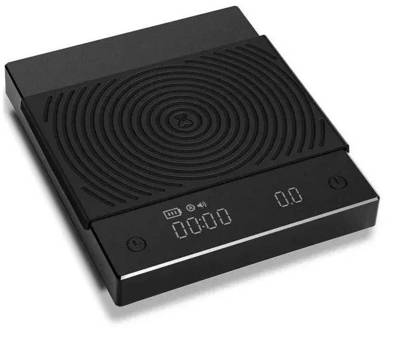
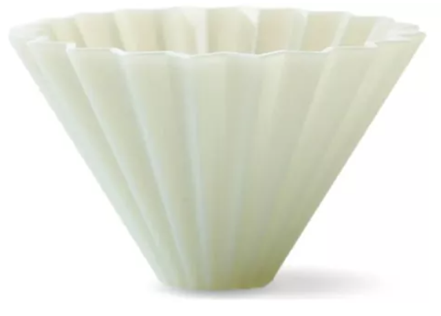

<h1>herramientas de baristas</h1>
<h2>top 3 mas usadas.</h2>
<hr />
<h3>balanzas de precesion </h3>

<p>objeto impresindible para la tarea</p>
<h3>pitchet </h3>

<p>jarras metalicas para la texturizacion</p>
<h3>pul over drippers</h3>

<p>metodos por goteo</p>